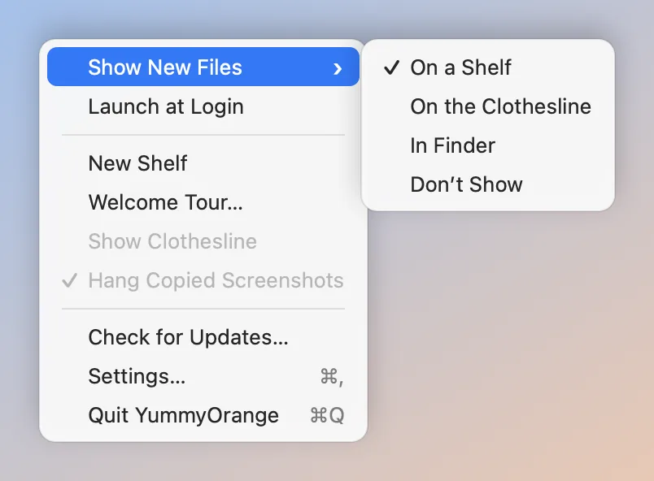
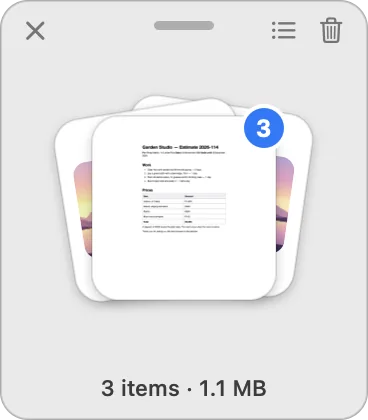
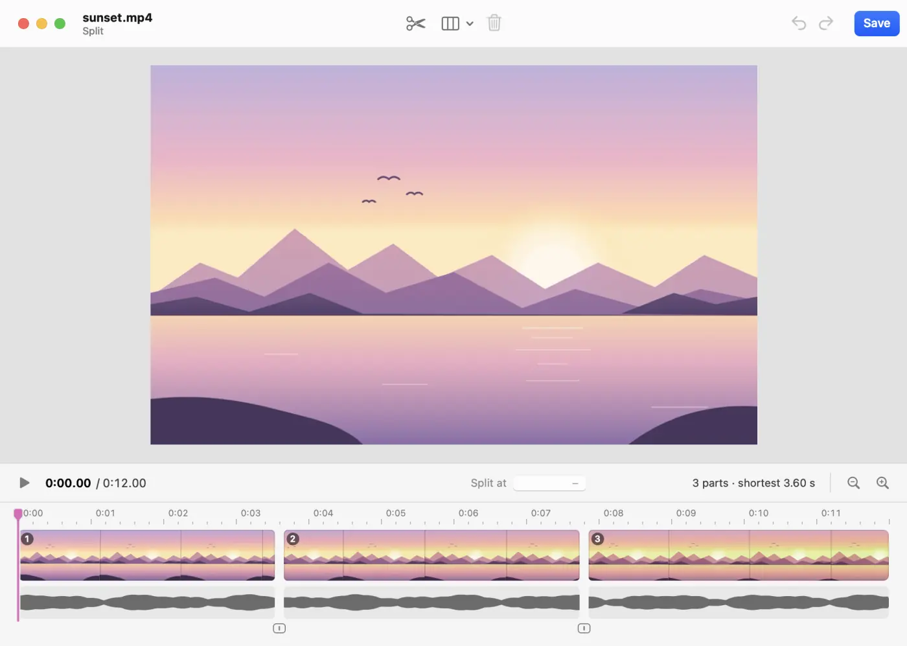

Convert files in the middle of a drag
Drag any file and, before you let go, tap ⇧ ⌘ or ⌥. A wheel opens under the pointer: drop the file on a petal to convert it, edit it or send it on.
Try the wheel
A simulation with sample files. In the app the same moves work on files in Finder, on your desktop, anywhere.
Drag a file, then press Shift for Convert, Command for Tools, or Option for Actions. Or focus a file and press Enter, or tap a key below the files. Use the arrow keys to choose a petal, Enter to apply and Escape to close. The Sound button beside the keys turns the petal sound and vibration on or off.
The Clothesline
New files can hang on a glowing string under the notch, like polaroids on a line. Rest the pointer in the notch and the line drops; move away and it goes back up.
On a Mac without a notch, the middle of the menu bar works the same. The line keeps the newest 50 files, and each card only points to its file: the file stays where it is.
Drag notes.md up to the notch to hang it, or focus it and press Enter. On the line, use the left and right arrow keys to select a card, Option with an arrow to move it, Delete to take it off, Command Z to put it back.
Or on a shelf, or in Finder
Show New Files in the menu-bar menu decides where results appear: on a small shelf beside the pointer, on the Clothesline, selected in Finder, or nowhere at all. A shelf holds every file one job made, ready to drag into an email or the next app.
The Float action parks any file on a shelf that stays above your windows.


From a link to a file
Drag a YouTube, X, Instagram, TikTok or Threads post out of your browser’s address bar and press ⇧. Let go on MP4 for the video or MP3 for just its sound: the file lands in Downloads and shows up like any new file, here on the Clothesline.
Sunset drive
A simulation with made-up posts: nothing is downloaded here. In the app it works with links from Safari, Chrome, Firefox and other browsers. Download only your own posts, or posts whose owner allows it.
Drag this address out of the browser, then press Shift, or tap the Shift key below the browser. Or press Return here. Use the arrow keys to choose MP4, MP3, M4A or WAV, Return to download and Escape to close.
Every file gets its own wheel
YummyOrange looks at what you’re dragging and offers only what fits it. Choose a file, then a key, and point at a petal.
Each result is a new file beside the original, named for what was done: lake.webp, lake compressed.jpg, lake rotated.png. A number is added only when that name is already taken, as in lake 2.webp. The file you dropped is never changed.
Some tools open a window
Try them right here. Save writes a new file next to the original.

Split
Cut one video into parts. Each part is saved as its own file.
Video
- Crop
- Redact
- Snapshot
- Bleep
- Speed
- Channels
Audio
- Bleep
- Speed
- Channels
- Visualize
Images
- Adjust
- Annotate
- Redact
- Organize
Your files stay on your Mac
- No uploads
- No account
- No tracking
- Originals untouched
Get YummyOrange
- Open the disk image and drag YummyOrange to Applications.
- Open YummyOrange. It waits in the menu bar until you drag a file, and the first time it shows a short tour with a sample photo to practise on.
- Version
- 1.0.0
- Price
- Size
- 7 MB
- Requires
- macOS 13 Ventura or later on a Mac with Apple silicon
Audio and video use ffmpeg. If your Mac doesn’t have it, YummyOrange downloads its own copy once (about 12 MB), an LGPL build of FFmpeg. More about ffmpeg
Download YummyOrange.dmgGuides for everyday jobs
Step by step, for the things people do most: edit a PDF, change a format, make a file smaller, save a video.
- Edit PDF text on a MacChange a line of a PDF’s text in its own font, or add text.
- Convert a PDF to Word on a MacPDF to an editable DOCX, and to TXT, Markdown, EPUB, PPTX, XLSX or images.
- Convert any file on your MacEvery format YummyOrange converts between, in one place.
- Convert HEIC photos to JPG on a MaciPhone photos to JPG, PNG, WebP or PDF, many at once.
- Convert MOV to MP4 on a MacScreen recordings and iPhone videos to MP4, GIF or MP3.
- Compress files on a MacSmaller PDFs, photos, videos and sounds, or a target size in MB.
- Trim a video on a MacFrame-accurate cuts in the file’s own format; split and merge too.
- Convert a video to MP3 on a MacThe sound of any video, or of a post you have a link to.
- Save Instagram videos on a MacReels and video posts as MP4, or just their sound as MP3.
- Save TikTok videos on a MacTikTok videos as MP4, or their sound as MP3.
- Save videos from YouTube, X and Threads on a MacAny supported link as MP4, MP3, M4A or WAV.
Questions
How do I open a wheel?
Start dragging a file, then press ⇧ Shift, ⌘ Command or ⌥ Option. You can also hold the key first and then drag, and let go of the key once the wheel is up. Pressing another wheel’s key switches wheels, Esc closes the wheel, and , (comma) opens Settings.
Why doesn’t ⇧ or ⌘ work on a file that’s already selected?
Finder treats ⇧ or ⌘ on a selected file as “deselect”, so no drag starts. Turn on Settings › Wheels › Hold the key first and YummyOrange holds that click back until it knows you meant to drag. That option needs Accessibility access; nothing else does. ⌥ needs none of this: Finder doesn’t deselect a file when you press ⌥, so you can hold it before you drag. And if you drop on a Finder window instead of a petal while still holding ⌥, Finder copies the file, as ⌥-drag always does.
Where do converted files go?
Next to the original, named for what was done: lake.webp, lake compressed.jpg. If that name is already taken, a number is added, as in lake 2.webp. The original is never changed. New files open on a shelf near the pointer, or on the Clothesline, in Finder, or nowhere, as you choose in Show New Files.
Can YummyOrange download videos from Instagram, TikTok or YouTube?
Yes. Drag the post’s address out of your browser’s address bar, press ⇧ Shift and let go on MP4 for the video, or MP3, M4A or WAV for its sound; the file is saved in Downloads, named after the post. It works with links to YouTube, X (Twitter), Instagram, TikTok and Threads. Please download only your own posts, or posts whose owner allows it. See the Instagram, TikTok and YouTube, X and Threads guides.
Can I edit a PDF’s text for free?
Yes. Drag the PDF, press ⌘ Command and let go on Edit PDF…: change a line’s text in place, in the PDF’s own font, or add text. The edited copy is saved next to the original as “name edited.pdf”. YummyOrange is free and open source. See Edit PDF text on a Mac.
Does macOS ask for any permissions?
Only in a few places, and only once. macOS asks before YummyOrange first saves into your Desktop, Documents or Downloads folder, or onto an external drive. If you hang copied screenshots on the Clothesline, it asks before YummyOrange reads the first one. Launch at Login may need your OK in System Settings › General › Login Items. Accessibility access is needed only for Hold the key first. The ffmpeg download asks for nothing.
Do my files leave my Mac?
No. YummyOrange converts with its own code, the frameworks in macOS and, for audio and video, the ffmpeg on your Mac. There’s no account and no server, and the app has no analytics. Saving a video from a link downloads it from that site straight to your Mac.
Do I need to install anything else?
No. Images, PDFs, documents, ebooks, slides, spreadsheets, subtitles and archives work out of the box. Audio and video use ffmpeg, a free tool. If your Mac doesn’t have it, YummyOrange downloads its own copy from this website once (about 12 MB): about a minute after it first opens, on a network that isn’t Low Data Mode or a phone’s hotspot, or as soon as you start on a sound or video. Settings › About can download it at once or cancel it. It checks the download before using it and keeps it in ~/Library/Application Support/YummyOrange, where updates leave it alone. Saving pictures as WebP works the same way. Saving videos from links uses yt-dlp, a free downloader; YummyOrange asks before downloading it (about 37 MB) the first time. If you already have ffmpeg, from Homebrew for example, in /opt/homebrew/bin, /usr/local/bin or ~/.local/bin, YummyOrange uses yours and downloads nothing (if yours stops working, it uses its own instead). YummyOrange’s copy is an LGPL build of FFmpeg; its license and source code are on this site.
Can I change the keys?
Yes. Each wheel’s key can be changed or turned off in Settings, which also has the wheel’s look (Glass or Metallic), the petal sound (Dial, Click, Wood, Pop or Glass, or off) and haptics.
Does YummyOrange update itself?
Yes. Every hour YummyOrange checks whether a new version is out and lets you know; choose Update in its menu-bar menu (or click the notification), read what’s new, then Install Update, and it downloads the update, checks that it is signed by its developer and notarized by Apple, replaces itself and restarts. If an editor window has unsaved changes, it asks first. Nothing is installed until you choose to, and your settings stay. Check for Updates… in the menu looks right away, and Settings › General can turn the automatic check off. New versions are also listed in the release notes.
Is YummyOrange open source?
Yes. YummyOrange is free and open source under the MIT licence, made by Epoxlab LLC. The code for the app and this website is on GitHub; issues and pull requests are welcome.
Can I talk to a person?
Yes, to the founder, Ali, who builds YummyOrange and reads every message: . Talk to the Founder… in the menu-bar menu starts that email for you, with your YummyOrange and macOS versions filled in. Ideas, bugs and file types you’d like are all welcome.
Which Macs does it run on?
Macs with Apple silicon and macOS 13 Ventura or later. The app is about 7 MB and lives in the menu bar.